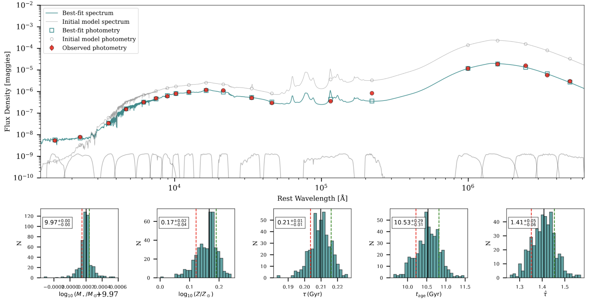

Research Projects
Exploring galaxy evolution and AGNs using advanced modeling and multi-wavelength data
Physical parameters of galaxies from SED Modelling

I am part of the Rubin/LSST consortium. As part of our in-kind project, we are working on the spectral energy distribution (SED) modelling of galaxies and AGNs. We are using the Prospector and BAGPIPES codes to model the SEDs of galaxies and AGNs. We are also working on the Bayesian inference of stellar population parameters using these codes. See this page for further information on this project.
AGN Variability and dependence on Physical parameters
In this project, we analyze AGN variability using light curves from the Zwicky Transient Facility (ZTF). We employ Damped Random Walk (DRW) to characterize variability patterns across different timescales. We investigates the relationship between black hole mass and variability properties, examines multi-band variability signatures, and utilizes excess variance as a diagnostic tool.
Low luminosity AGN and the main sequence Framework
This project investigates low-luminosity Active Galactic Nuclei (AGNs) by analyzing their spectroscopic signatures and variability patterns. We're positioning these objects within the quasar main sequence framework, particularly focusing on the 4-Dimensional Eigenvector 1 (4DE1) parameter space to understan how low-luminosity AGNs fit into established correlations between emission line properties, accretion rates, and black hole masses.
Accretion Disc sizes from reverberation Mapping
As the innermost regions of AGN are too difficult to resolve spatially, we use a technique known as Reverberation Mapping to resolve these innermost regions. As the light travels from the inner to our regions, the fluctuations in the two regions can be recorded, with a lag which is understood as the light travel time. This technique yields the size of the accretion disk. In this work we have used this technique to measure the accretion dize sizes for 19 AGNs selected from the ZTF survey.
Data-driven Mg II Absorber Classification with Machine Learning
This project applies unsupervised machine learning techniques (combining UMAP dimensionality reduction with DBSCAN clustering) to analyze Mg II absorber systems detected in quasar spectra. We identify natural groupings in the absorption profiles without prior assumptions, allowing for data-driven classification. Our work reveals connections between absorption signatures and their corresponding physical environments in the intergalactic and circumgalactic medium, providing insights into galaxy evolution across cosmic time.
Calibration of Photometric reverberation mapping technique
Photometric Reverberation mapping is a cost-effective alternative to traditional reverberation mapping. However, the technique has not been used for a large sample of quasars so far. In this work, we have calibrated the technique of PRM with the traditional RM and also performed simulations to devise an optimum strategy for a successful PRM campaign.
Jet‑Induced Optical Microvariability in NLSy1s
AGN are known to be variable at all time scales. In this project, we use a handful of peculiar Narrow Line Seyfert 1 (NLSy1) Galaxies, and checked for the variability at smallest time scales. We relate the phenomenon of γ ray emission jet with the microvariability observed in this sample of AGN and find out that these AGNs behave like blazars at shorter time scales of variability.
AGN Accretion Disc Reverberation Mapping
In this study, we present initial results from our accretion disk reverberation mapping campaign targeting AGN with Super High Eddington Accreting Black Holes (SEAMBH). Our analysis on one of the sources- IRAS 04416+1215; based on the broadband observations using the Growth India telescope (GIT), reveals that the size of the accretion disk for this source, calculated by cross-correlating the continuum light curves is larger than expected from the theoretical model.
Physical Properties of Narrow Line vs Broad Line Seyfert 1 galaxies
In this work, we have studied the emission line profiles in a peculiar class of Seyfert galaxies: the Narrow Line Seyferts. Using a combination of 11 physical parameters, we compared the behaviour of a sample of around 150 NLSy1 galaxies as compared to the general Broad Line Seyfert population and discovered that peculiar behaviour of NLSy1 galaxies holds true for a large sample.